O'zbekiston Respublikasi |
|
| Andijon viloyati |
O'zbekiston Respublikasi
|
| Buxoro viloyati | |
| Farg'ona viloyati | |
| Jizzax viloyati | |
| Namangan viloyati | |
| Navoiy viloyati | |
| Qashqadaryo viloyati | |
| Qoraqalpog'iston Respublikasi | |
| Samarqand viloyati | |
| Sirdaryo viloyati | |
| Surxondaryo viloyati | |
| Tashkent shahri | |
| Toshkent viloyati | |
| Xorazm viloyati | |
Andijon viloyati — Oʻzbekiston Respublikasi tarkibidagi viloyat [2]. Fargʻona vodiysining sharqiy qismida joylashgan. 1941-yil 6-martda tashkil etilgan. Maydoni 4,3 ming km². Aholisi 3 394 400 kishi (2024-yil 1-yanvar holatiga). Andijon viloyatida 2 ta viloyatga bo‘ysinuvchi shahar, 14 tuman, 11 ta tumanga bo‘ysinuvchi shaharlar, 79 ta shaharchalar, 455 ta Qishloq aholi punktlari bor (2024 yil holatiga). Markazi — Andijon shahri. Tarixi Viloyat 1941-yil 6-martda SSSR Oliy Soveti Prezidiumining farmoni bilan Fargʻona viloyatidan ajralib chiqib, Oʻzbekiston SSR tarkibida tashkil etilgan. Bu hududda avval, 1926—1930-yillarda O‘zbekiston SSRning Andijon okrugi tashkil etilgan. Dastlab viloyat tarkibiga Oyim, Oltinkoʻl tumani, Andijon, Baliqchi, Voroshilov, Jalaquduq, Izboskan, Lenin, Marhamat, [Paxtaobod, Stalin, Xoʻjaobod tumanlari hamda viloyatga qarashli Andijon va Leninsk shaharlari kirgan. 1943-yilda Xoldevonbek, Chinobod tumanlari, 1950-yilda Boʻz tumani, 1953-yilda Buloqboshi, Qoʻrgʻontepa, Moskva tumanlari tashkil etilgan. 1959-yilda Moskva viloyati tugatildi. 1960-yilda tugatilgan Namangan viloyati tarkibidan Namangan, Norin, Uychi, Uchqo‘rg‘on, Yangiqo‘rg‘on tumanlari hamda Namangan viloyatiga bo‘ysunuvchi shahar Andijon viloyati tarkibiga o‘tkazilgan. 1961-yilda Voroshilov tumani Ilyichevsk, Stalinsk esa Moskva deb o'zgartirilgan. Kosonsoy, Toʻraqoʻrgʻon va Chust tumanlari Fargʻona viloyatidan Andijon viloyatiga oʻtkazilgan. 1962 yil dekabr oyida Aim, Oltinkoʻl, Bo'z, Buloqboshi, Jalaquduq, Ilyichevsk, Kosonsoy, Lenin, Norin, Paxtaobod, Toʻraqoʻrgʻon, Uychi, Xaldivonbek va Chinobod tumanlari tugatilgan. 1964-yilda Boʻz va Zadaryo tumanlari tashkil etilgan.1965-yilda Marhamat tumani Lenin tumani deb nomlangan. 1967-yilda Uychi tumani tashkil topgan. Oʻsha yili Zadaryo, Namangan, Uychi, Uchqoʻrgʻon, Chust, Yaniqoʻrgʻon tumanlari hamda Namangan shahri qayta tiklangan Namangan viloyatiga oʻtkazilgan. 1970-yilda Marhamat, Paxtaobod tumanlari, 1973-yilda Jalaquduq va Komsomolobod, 1978-yilda Oltinko‘l tumanlari tashkil etilgan. 1972-yilda Sovetobod tumanga, 1994-yilda esa Shahrixonga viloyatga bo'ysunuvchi shahar maqomini olgan. 1992-yilda Buloqboshi tumani tashkil etilgan.
 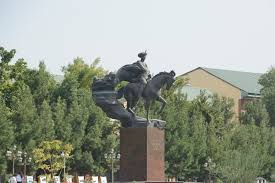
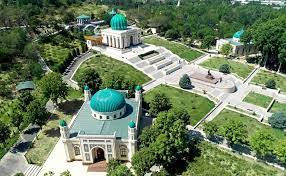
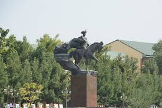
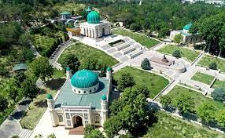
Buxoro viloyati — Oʻzbekiston Respublikasining 12 viloyatlaridan biri. Oʻzbekiston viloyatlari ichida chegarasining kattaligi boʻyicha Navoiy viloyatidan keyin ikkinchi oʻrinda turadi. 1938-yil 15-yanvarda tashkil etilgan. Buxoro viloyati hududi asosan Qizilqum choʻlida joylashgan. Janubi-sharqini Zarafshon vodiysi egallagan. Shimoli-gʻarbda Xorazm viloyati va Qoraqalpogʻiston Respublikasi, shimol va sharqdan Navoiy viloyati, janubi-sharqda Qashqadaryo viloyati, janubi-gʻarbda Turkmaniston bilan chegaradosh. Maydoni 39,4 ming km2. Aholisi 2.000.255 kishi[1] (2022). Buxoro viloyati tarkibida 11 ta tuman (Buxoro, Vobkent, Jondor, Kogon, Olot, Peshkoʻ, Romitan, Shofirkon, Qorovulbozor, Qorakoʻl, Gʻijduvon), 11 ta shahar (Buxoro, Kogon, Galaosiyo, Vobkent, Gazli, Olot, Romitan, Shofirkon, Qorakoʻl, Qorovulbozor, Gʻijduvon), 3 ta shaharcha (Jondor, Zafarobod, Yangibozor), 121 ta qishloq bor. Buxoro viloyati aholisining etnik tarkibini asosan oʻzbeklar va ruslar, forslar (eroniylar), turkmanlar, tojiklar, ukrainlar, koreyslar, tatarlar va boshqalar tashkil etadi. Markazi — Buxoro shahri. Tarixi Buxoro viloyati 1938-yil 15-yanvarda tashkil topgan. Yil oxiriga kelib uning tarkibiga Surxondaryo okrugi, Beshkent, Buxoro, Vobkent, Gʻijduvon, Gʻuzor, Dehqonobod, Kogon, Qamashi, Qorakoʻl, Qarshi, Koson, Konimex, Karmana, Qiziltepa, Kitob, Romitan, Sverdlov, Chiroqchi tumani, Shofirkon, Shahrisabz, Yakkabogʻ tumanlari va viloyatga qarashli Buxoro, Gʻijduvon, Kogon, Qarshi va Shahrisabz shaharlari qo'shilgan. 1941-yil 6-martda Surxondaryo okrugi Buxoro viloyati tarkibidan chiqarilib, Surxondaryo viloyatiga aylantirilgan. 1943-yil 20-yanvarda Beshkent, G‘uzor, Dehqonobod, Qamashi, Qarshi, Koson, Kitob, Chiroqchin, Shahrisabz, Yakkabog‘ viloyatlari hamda Qarshi va Shahrisabz shaharlari Buxorodan yangi Qashqadaryo viloyati tarkibiga o‘tkazilgan. 1943-yil 13-fevralda Olot tumani tashkil etilgan, 1943-yil 2-avgustda Tomdi tumani Qoraqalpogʻiston ASSR tarkibidan Buxoro viloyatiga oʻtkazilgan. 1950-yil 15-aprelda Peshku, 1952-yil 16-aprelda Galaosiyo tumanlari tuzilgan. 1958-yil 22-sentyabrda Karmana tumani Navoiy deb nomlangan. 1959-yilda Galaosiyo, Peshku (1959-yil 19-mart) va Olot (1959-yil 9-dekabr) tumanlari, 1962-yil dekabrda Kogon, Konimex, Qiziltepa, Sverdlovsk va Shofirkon tumanlari tugatilgan. 1964-yil 31-dekabr Kogon, 1965-yil Konimex, 1967-yil 9-yanvar Sverdlov, 1968-yil Shofirkon, 1970-yil Qiziltepa, 1973-yil Olot, 1972-yil Peshku, 1980-yil 12-mart Navbahor, 1982-yilda - Gazli va Uchquduq tumanlari tashkil etilgan. 1972-yilda Zarafshon, 1978-yilda esa Uchquduq viloyatga boʻysunuvchi shahar maqomini olgan. 1982-yil 20-aprelda Navoiy viloyatiga Buxoro viloyati tarkibidan Konimex, Qiziltepa, Navbahor, Navoiy, Tomdi va Uchquduq tumanlari hamda Zarafshon va Uchquduq shaharlari kiritilgan. 1984-yilda Gazli tumani tugatilgan.
 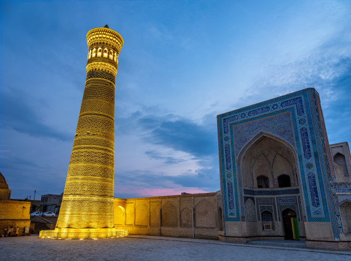
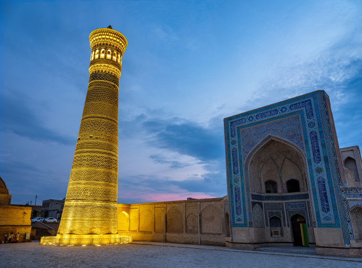
Fargʻona viloyati — Oʻzbekiston Respublikasi tarkibidagi viloyat. 1938-yil 15-yanvarda tashkil etilgan. Respublikaning sharqida, Fargʻona vodiysining janubida joylashgan. Shimoldan Namangan, Andijon viloyatlari, janub va sharqdan Qirgʻiziston, gʻarbdan Tojikiston Respublikalari bilan chegaradosh. Maydoni 6,8 ming km2. Aholisi 2023-yil 1-aprel 3 994 800 kishi. Tarkibida 15 tuman, 4 shahar (Margʻilon, Fargʻona, Quvasoy, Qoʻqon), 5 tumanga boʻysunuvchi shahar (Beshariq,Rishton,Yaypan,Quva,Hamza,25 dan ortiq shaharcha, 164 qishloq fuqarolari yigʻini bor (2019). Markazi — Fargʻona shahri. Tarixi Xudoyorxon oʻrdasi Fargʻona darvozasi Fargʻona xalqaro aeroporti Fargʻona viloyati Oʻzbekistonning qadimgi madaniyat oʻchoqlaridan biri. Viloyat hududida topilgan tosh davri manzilgohlari va qoyatoshlariga solingan suratlar vodiyda odamlar eng qadimgi davrlardan beri yashab kelganliklaridan darak beradi. Fargʻona viloyatining tosh davri yodgorliklarini 1954-yil A. P. Okladnikov rahbarligidagi arxeologiya otryadi oʻrgangan. Vodiyning sharqiy qismidagi Qayroqqum, Xoʻjagʻor va Uchqoʻrgʻon makonlaridan mustye davriga oid tosh qurollar topildi. Vodiyning gʻarbiy qismidagi qadimgi tosh davri madaniyatiga oid manzilgohlar mustye davridagi Qalʼacha, Jarqoʻton va Qapchigʻay tosh qurollar ishlash ustaxonalari topilib oʻrganildi. 1958-yil birinchi marta Markaziy Fargʻonadan mezolit davriga oid mikrolit tosh qurollari topildi. Shuningdek, Markaziy Fargʻonadagi Uzunkoʻl va Tayloqkoʻl atroflaridan mezolit va neolit davrlariga oid 24 ta manzilgoh borligi aniqlandi (1965). Soʻx vohasidagi 28 gʻor va ungurlar (Selungur, Eshma, Obishir, Sur, Bel, Zim, Ovikambar, Bogʻishim va boshqalar) roʻyxatga olindi. Obishir gʻorlaridagi madaniy qatlam yaxshi saqlangan. Gʻorlarni qazish jarayonida mezolit davriga oid tosh qurollar, xayvon suyaklari topilgan. Bular oʻsha davr turmushini oʻrganish imkonini beradi. 1967 va 1969—70 yillarda Sankt-Peterburgdagi Ermitaj muzeyi xodimlari mezolit va neolit davrlariga oid 35 ta manzilgoh topdilar. Fargʻona viloyatining arxeologik yodgorliklarini oʻrganishda Katta Fargʻona kanalining qazilishi muhim ahamiyatga ega boʻldi. Kanalni qazish jarayonida jez davri, quldorlik va zamindorlik jamiyatlariga oid yodgorliklar topildi va tekshirildi. Quva va Toshloq tumanlari oʻrtasidagi Akbarobod qishlogʻida jez davriga oid manzilgoh, Margʻilonsoyning chap sohilida Oqtom qabristoni boʻlganligi aniqlandi. Fargʻona viloyatining Quva tumanida quldorlik davriga oid Taxyontepa, Fargʻona shahrida Simtepa (Chimtepa) kabi yodgorliklar topib oʻrganilgan. Ayniqsa, Quva shahridagi miloddan avvalgi 5-asr va oʻrta asr boshlariga oid topilmalar yaxshi tekshirilgan. 10-11-asrlarga doir tarixiy manbalarda bu shahar obodligi va kattaligi jihatidan vodiyda Axsikatdan soʻng eng yirik shahar deb qayd qilingan. Arxeologik materiallar Margʻilon shahri 10-asrda katta qishloq boʻlib, 11-12-asrlarda shaharga aylanganligini, Rishton esa 10-asrda katta shahar boʻlsa ham, 11-12 asrlarga kelib qishloq qiyofasiga kirib qolganligini isbotlaydi. Oʻtroq dehqonchilik, chorvachilik bilan shugʻullangan Chust madaniyatiga oid manzilgohlardan topilgan yodgorliklar Fargʻona vodiysini oʻrganishda muhimdir. U yerda ishlab chiqarish kuchlari va xoʻjalikning taraqqiyoti jez davrining oxirida dehqonchilik qabilalarining ijtimoiy tuzumida oʻzgarish yuz berishiga, natijada ibtidoiy tartiblar tugab, jamiyatdagi tabaqalanishga olib kelgan. Roʻzgʻor anjomlarida xususiy mulkchilik kurtaklari koʻzga tashlanadi. Arxeologik tekshirishlar natijasi Fargʻona viloyatida qadimdan odamlar yashab, ovchilik, dehqonchilik, chorvachilik bilan shugʻullanganligidan, kishilik jamiyatining keyingi bosqichlarida esa madaniyat rivojlana boshlaganligidan dalolat beradi.


Jizzax viloyati — Oʻzbekiston Respublikasi tarkibidagi viloyat. Respublikaning markaziy qismida joylashgan. 1973-yil 28-dekabrda viloyat sifatida tashkil etilgan. Shimoliy-sharqda Qozogʻiston Respublikasi va Sirdaryo viloyati, janubi-gʻarbda Samarqand, Navoiy viloyatlari, janubi-sharqda Tojikiston Respublikasi bilan chegaradosh. Maydon 21,2 ming km2. Aholisi 1 mln 483,1 ming kishi (2022.04). Jizzax viloyatida 12 ta tuman bor: Arnasoy, Baxmal, Doʻstlik, Sharof Rashidov, Zarbdor, Zafarobod, Zomin, Mirzachoʻl, Paxtakor, Yangiobod, Forish, Gʻallaorol. 20 ta shahar va shaharchalar (Gagarin, Dashtobod, Doʻstlik, Jizzax, Marjonbuloq, Paxtakor, Gʻallaorol, Zarbdor, Zomin, Boʻston, Zafarobod, Oʻsmat, Uchquloch, Bogʻdon, Pishagʻar, Qoʻytosh, Sharq yulduzi, Arnasoy), 400 qishloq fuqarolari yigʻini bor (2022). Markazi — Jizzax shahri. Tabiati Relyefi togʻlik, qir va tekisliklardan iborat. Janubiy qismini Turkiston tizmasining tarmoqlari (Morguzar tizmasi), gʻarbini Nurota tizmasining sharqiy qismi egallagan. Shimoliy, shimoli-gʻarbi va sharqiy qismi (Mirzachoʻl va Qizilqum choʻlining janubi-sharqi) tekislikdan iborat. Iqlimi keskin kontinental. Yanvarning oʻrtacha tempaturasi —4° gacha, iyulniki 28°. Togʻ oldilarida iqlim choʻl va dashtlarga nisbatan yumshoq. Yillik yogʻin viloyat janubida 400—500 mm, shimolida 250—300 mm. Vegetatsiya davri 210—240 kun. Yillik quyoshli kunlar 2800—3000 soat. Eng yirik daryolari — Sangzor, Zominsuv. Togʻlardan oqib tushuvchi soy koʻp. Ekinlarni sugʻorish uchun Tuyatortar kanali, 1- va 2-Janubiy Mirzachoʻl kanallari, Jizzax, Zomin, Qorovultepa suv omborlari qurilgan. 2001-yilda Arnasoy suv ombori qurila boshlandi. Arnasoy, Aydarkoʻl va Tuzkon koʻllaridan baliqchilikda foydalaniladi. Togʻ yon bagʻirlarida yovvoyi jiyda, archa, bodom, yongʻoq, naʼmatak, zira, rovoch, zirk kabilar oʻsadi. Yovvoyi hayvonlardan oq tirnoqli ayiq, chiyaboʻri, tulki, quyon, qobon, boʻrsiq, jayra uchraydi; burgut, lochin, qora turna, bulduruq, tuvaloq, tustovuq, qirgʻovul, yovvoyi oʻrdak, kaklik kabi qushlarning 150 dan ortiq turi mavjud. Viloyatda Zomin milliy bogʻi, Zomin va Nurota davlat qo'riqxonalari tashkil qilingan.

 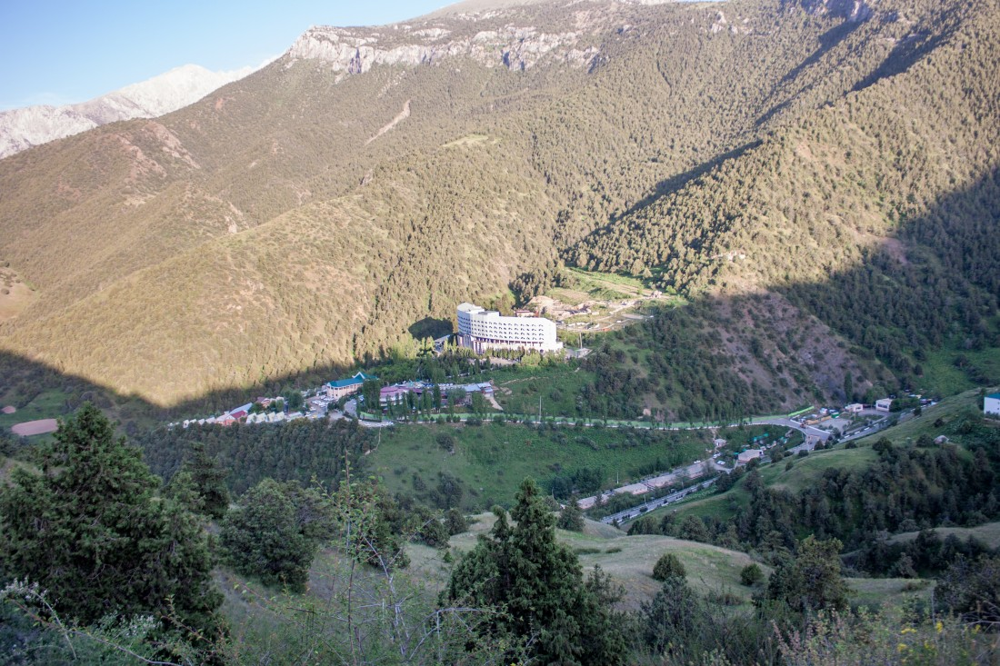
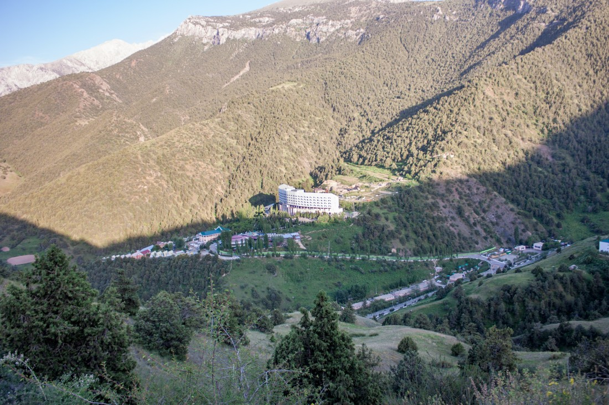
Namangan viloyati — Oʻzbekiston Respublikasi tarkibidagi viloyat. 1941-yil 11-martda tashkil etilgan (1960-yil 25-yanvarda Andijon va Fargʻona viloyatlari tarkibiga qoʻshib yuborilgan. 1967-yil 18-dekabrda qayta tashkil etildi). Namangan viloyati respublikaning sharqida, Fargʻona vodiysining shimoli-gʻarbiy qismida, Tyanshan togʻ tizmasi tarmoklari — Qurama va Chatqol togʻlarining yon bagʻrida joylashgan. Shimoliy va shimoli-sharqdan Qirgʻiziston Respublikasining Jalolobod viloyati, janubi-sharqdan Andijon, janubidan Fargʻona, shimoliy va shimoli-gʻarbdan Toshkent viloyati va Tojikistonning Sugʻd viloyati bilan chegaradosh. Maydoni 7,44 ming km². Aholisi 2931,5 ming kishi (2021). Namangan viloyatida 11 qishloq tumani (Kosonsoy, Mingbuloq, Namangan, Norin, Pop, Toʻraqoʻrgʻon, Uychi, Uchqoʻrgʻon, Chortoq, Chust, Yangiqoʻrgʻon), 8 shahar (Namangan, Kosonsoy, Pop, Toʻraqoʻrgʻon, Uchqoʻrgʻon, Chortoq, Chust, Haqqulobod), 11 shaharcha (Sang, Jomashoʻy, Toshbuloq, Navbahor, Oltinkon, Uygʻursoy, Chorkesar, Xalqobod, Uychi, Oʻnhayot, Yangiqoʻrgʻon, Oqtosh, Chodak), 99 qishloq fuqarolari yigʻini bor. Markazi — Namangan shahri. Tarixi Namangan viloyati 1941-yil 6-martda SSSR Oliy Soveti Prezidiumining farmoni bilan (bundan oldin uning hududi Fargʻona viloyati tarkibiga kirgan) Oʻzbekiston SSR tarkibida tashkil etilgan. Viloyat tarkibiga Kosonsoy, Namangan, Norin, Pop, Toʻraqo‘rg‘on, Uychi, Uchqo‘rg‘on, Chust va Yangiqo‘rg‘on tumanlari hamda Namangan va Chust viloyatga bo‘ysunuvchi shaharlar kirgan. 1950-yilda Chortoq, 1952 yilda Zadaryo tumanlari tashkil topdi. Bu ikkala tuman ham 1959-yilda tugatilgan. 1960-yil 25-yanvarda Namangan viloyati tugatilib, uning hududi Andijon va Fargʻona viloyatlari (Namangan shahri — Andijon shahriga bevosita boʻysunuvchi) tarkibiga kirgan. Viloyat 1967-yil 18-dekabrda tiklangan. Qayta tiklash davrida viloyat tarkibiga Zadaryo, Namangan, Pop, Uychi, Uchqo‘rg‘on, Chust va Yangiqo‘rg‘on tumanlari hamda Namangan shahri qoʻshilgan. 1970-yilda Toʻraqoʻrgʻon, 1973-yilda Kosonsoy va Norin, 1980-yilda Chortoq tumanlari tashkil etilgan. 1969-yilda Chust, 1974-yilda Uchqo‘rg‘on, 1979-yilda Kosonsoy, 1983-yilda Chortoq, 1988-yilda Haqqulobod viloyatga bo‘ysunuvchi shahar maqomini olgan.
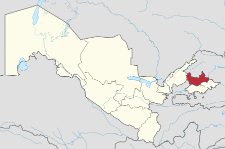 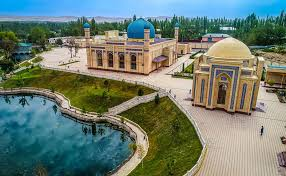 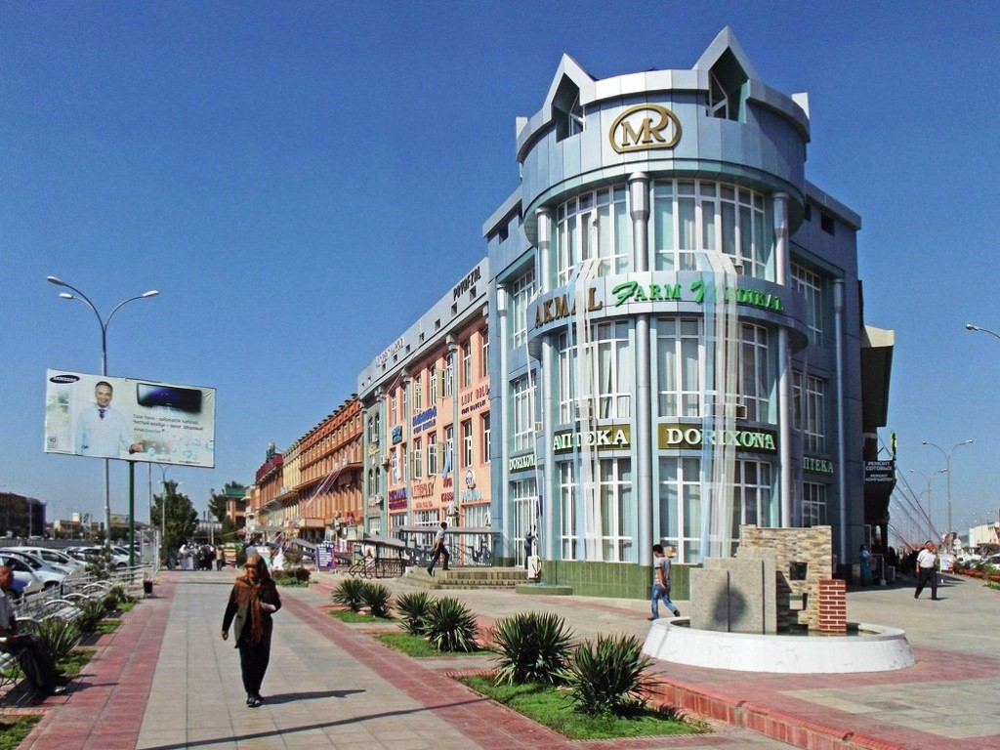 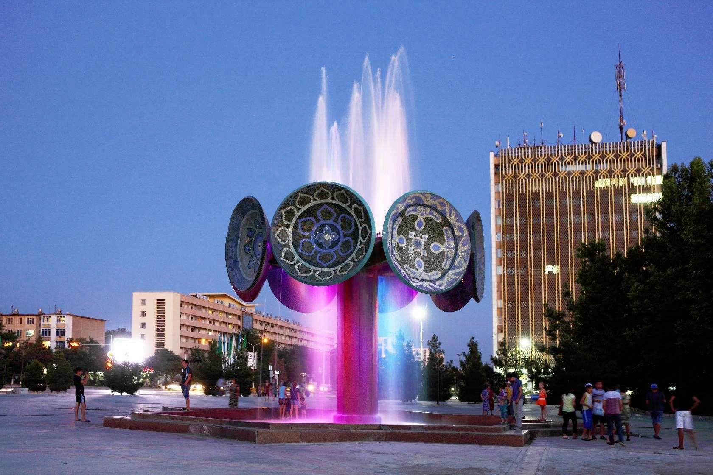
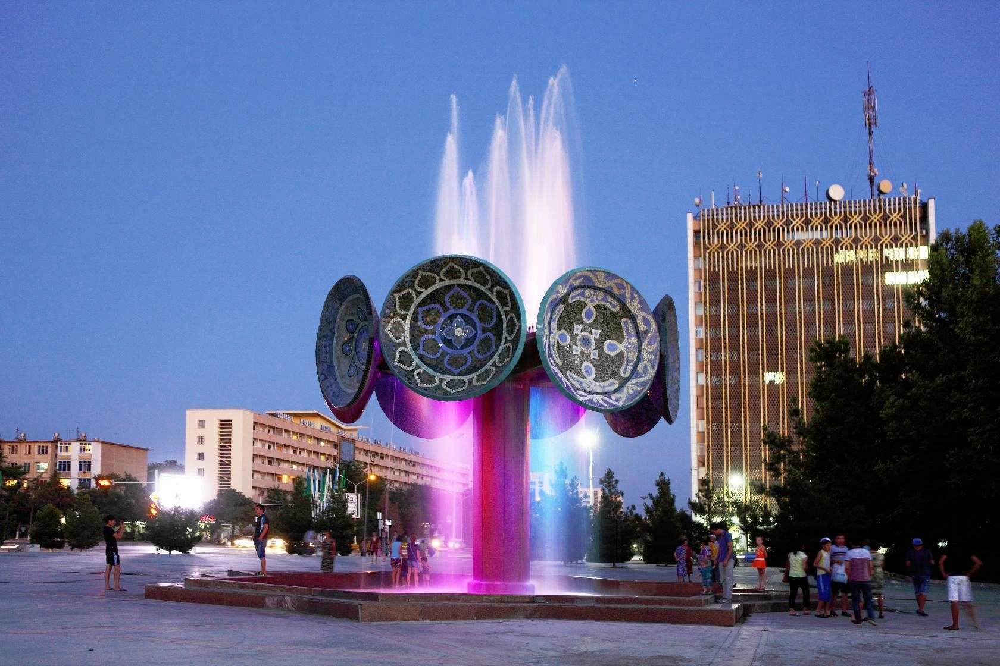

Qashqadaryo viloyati — Oʻzbekiston Respublikasi tarkibidagi viloyat. 1924-yil 1-noyabrda tashkil etilgan. Respublikaning janubi-gʻarbida, Qashqadaryo havzasida, Pomir-Oloy togʻ tizmasining gʻarbiy chekkasida, Amudaryo va Zarafshon daryolari, Hisor va Zarafshon tizma togʻlari orasida. Shimoli-gʻarbdan Buxoro va janubi-sharqdan Surxondaryo viloyatlari, janubi-gʻarb va gʻarbdan Turkmaniston Respublikasi, sharqdan Tojikiston Respublikasi hamda Samarqand viloyati bilan chegaradosh. Maydoni 28,6 ming km². Aholisi 3,408,300 kishi (3-oʻrin) (2022). Viloyat hokimi Murotjon Azimov (2021-yil 18-noyabrdan) Tarkibida 14 ta tumani (Dehqonobod, Kasbi, Kitob, Koson, Koʻkdala tumani), Mirishkor, Muborak, Nishon, Qamashi, Qarshi, Yakkabogʻ, Gʻuzor, Shahrisabz, Chiroqchi, 12 ta shahar (Beshkent, Kitob, Koson, Muborak, Tallimarjon, Chiroqchi, Shahrisabz, Yakkabogʻ, Yangi Nishon, Qamashi, Qarshi, Gʻuzor), 4 ta shaharcha (Yangi Mirishkor,Dehqonobod, Miroqi, Eski Yakkabogʻ, Pomuq), 147 ta qishloq fuqarolari yigʻini, 1064 ta qishloq bor (2005). Qashqadaryo viloyati tumanlari haqida alohida maqolalarga qarang: masalan, Dehqonobod tumani, Kasbi tumani va boshqalar.
 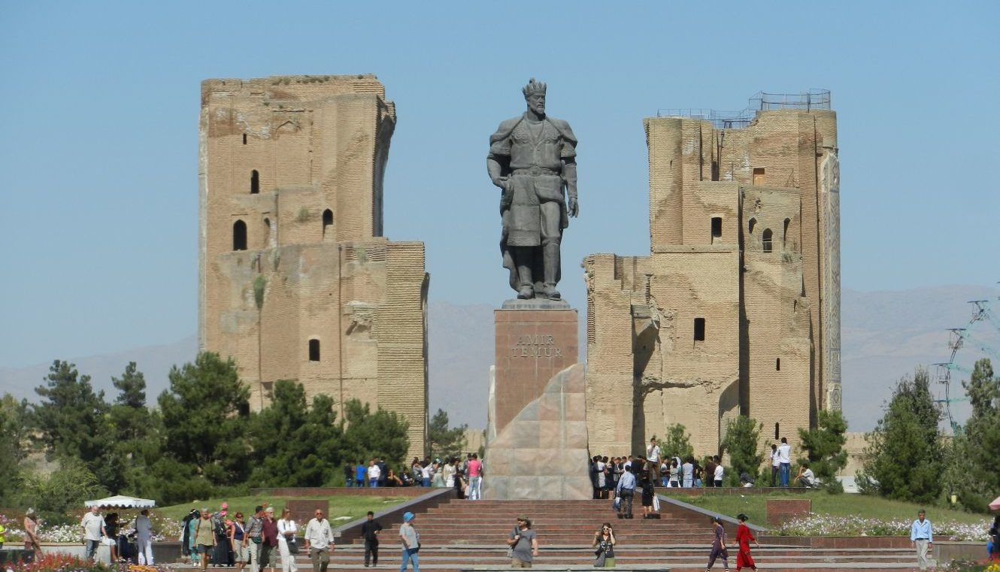
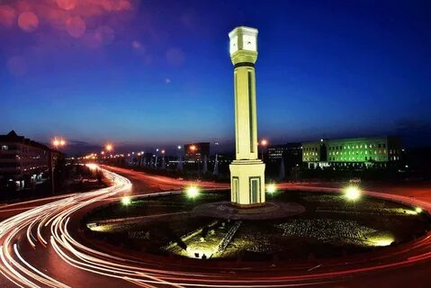
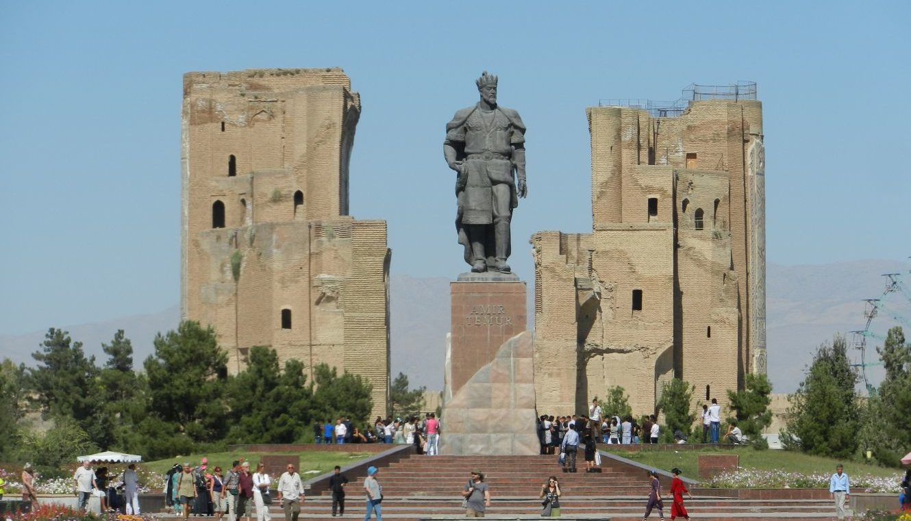
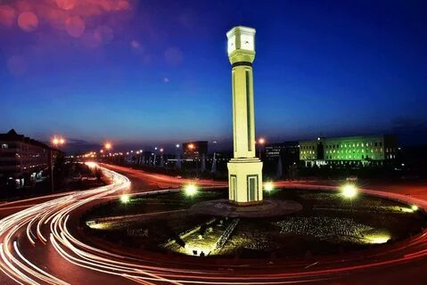
Qoraqalpogʻiston — Maydoni 166,6 ming km². Aholisi 2 million (2024). Respublika poytaxti — Nukus shahri. Tarkibida 16 tuman, 12 shahar, 14 shaharcha va 124 fuqarolar yigʻini bor.[1] Davlat tuzumi Qoraqalpogʻiston — parlament boshqaruv shakliga ega boʻlgan O'zbekiston respublikasi tarkibidagi suveren demokratik respublika. Qonun chiqaruvchi oliy davlat vakolatli organi — koʻp partiyaviylik asosida 5 yil muddatga saylangan deputatlardan iborat Qoraqalpogʻiston hududi Joʻqorgʻi Kengeshi (QR JK). Qoraqalpogʻiston hududi Joʻqorgʻi Kengeshi raisi respublika rahbari hisoblanib, u Joʻqorgʻi Kengesh deputatlari orasidan 5 yil muddatga saylanadi (faqat ketma-ket 2 muddatdan oshmaydi). Davlat hokimiyatining oliy ijro etuvchi-boshqaruvchi organi Qoraqalpogʻiston Respublikasi Vazirlar Kengashi, yaʼni Qoraqalpogʻiston Respublikasi hukumati hisoblanadi. Qoraqalpogʻistonda Oʻzbekiston Respublikasi Konstitutsiyasi bilan bir vaqtda Qoraqalpogʻiston Oliy kengashining 1993-yil 9-apreldagi 12-chaqiriq 12-sessiyasida qabul qilingan Qoraqalpogʻiston Hududi Konstitutsiyasiga amal qilinadi. Qoraqalpogʻiston oʻz davlat ramzlari: gerb, madhiya va bayrogʻiga ega.


Samarqand viloyati – Oʻzbekiston Respublikasidagi maʼmuriy birlik. Maʼmuriy markazi – Samarqand shahri. Mamlakatning muhim iqtisodiy va madaniy mintaqasi. Tarixi Qadimgi davrda Samarqanddan topilgan odam boshi suyaklari parchalarini arxeologlar Yuqori paleolit davriga kiritishadi[1][2][3]. Rossiya imperiyasi davrida Rossiya imperiyasi davrida Samarqand viloyatidan boʻlgan oʻzbek hikoyanavislari: Fozil Yoʻldosh oʻgʻli (1872-1955), Muhammad Jonmurod oʻgʻli Poʻlkan (1874-1941), Islom Nazar oʻgʻli (1874-1953), Abdulla Shoir Nurali oʻgʻli (1870-1975), Qurbon Ismoil oʻgʻli (1869-1940) boʻlgan. Hikoyachilardan eng mashhuri Ergash Jumanbulbul oʻgʻli edi[4]. Statistik maʼlumotlarga koʻra, 1887-1888-yillarda Samarqand tumanida 254195 kishidan 186532 kishi (yaʼni aholining 73 foizi) oʻzbeklar, qolgan aholisini tojiklar, ruslar, arablar, eronliklar va boshqalar tashkil etgan[5]. Sovet Ittifoqi davrida SSSR Oliy Soveti Prezidiumining 1938-yil 15-yanvardagi farmoni bilan Samarqand viloyati Oʻzbekiston SSR tarkibida tashkil etilgan. Viloyat tarkibiga Oqdaryo, Bulungʻur, Gʻallaorol, Jomboy, Jizzax, Zomin, Qoradaryo, Kattaqoʻrgʻon, Mitan, Narpay, Nurota, Payariq, Pastdargʻom, Paxtakor, Samarqand, Urgut tumanlari, Samarqand, Jizzax va Kattaqoʻrgʻon shaharlari kirgan. 1939-yilda Komsomol, 1943-yilda Ishtixon, Qoraqishloq va Qoʻshrabot, 1950-yilda Charxa, 1953-yilda Narimanov tumanlari tashkil etildi. 1957-yilda Qoraqishloq, Qushrobod va Charxa tumanlari, 1959-yilda Qoradaryo, Komsomol, Mitan va Narimanov tumanlari, 1962-yilda Oqdaryo, Gʻallaorol, Jomboy, Zomin, Paxtakor, Urgut, Forish va Xatirchi tumanlari tugatildi. 1963-yil 16-fevralda Samarqand viloyati hududining bir qismi (qishloq xoʻjaligi yangi rivojlanayotgan hududlarda – Jizzax viloyati va Jizzax shahri) yangi tashkil etilgan Sirdaryo viloyatiga oʻtkazildi. 1964-yilda Gʻallaorol, Urgut va Xatirchi, 1968-yilda Oqdaryo, 1970-yilda Jomboy, 1971-yilda Baxmal, 1973-yilda Paxtachi tumanlari tashkil etildi. 1973-yil 29-dekabrda Samarqand viloyati hududining bir qismi (Baxmal va Gʻallaorol tumanlari) yangi tashkil etilgan Jizzax viloyatiga oʻtkazildi[6]. 1975-yilda Sovetobod tumani, 1978-yilda Qoʻshrabot tumani, 1980-yilda Bolshevik tumani (1988-yilda tugatilgan) tashkil etildi. Oqtosh (1975) va Urgut (1981) viloyatga boʻysunuvchi shahar maqomini oldi. 1982-yil 20-aprelda Samarqand viloyati hududining bir qismi (Nurota va Xatirchi tumanlari) yangi tashkil etilgan Navoiy viloyatiga oʻtkazildi. 1988-yil sentabrda Navoiy viloyati Samarqand viloyati tarkibiga kirdi. 1989-yil may oyida Navoiy viloyatining 7 ta tumani va Navoiy shahri Buxoro viloyatiga oʻtkazildi.
 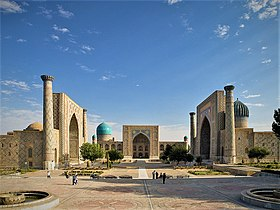
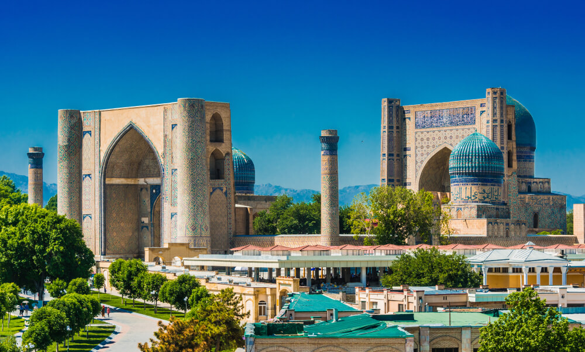
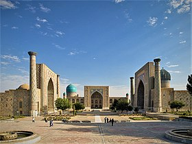
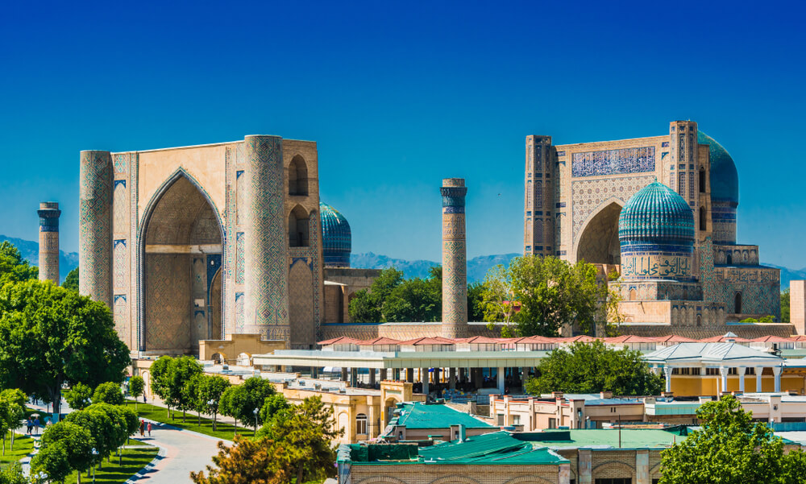
Sirdaryo viloyati — Oʻzbekiston Respublikasi tarkibidagi viloyat. 1963-yil 16-fevralda tashkil etilgan. Shimolidan Qozogʻiston Respublikasi, sharqdan Toshkent viloyati, janubidan Tojikiston Respublikasi va gʻarbdan Jizzax viloyati bilan chegaradosh. Maydoni 4.28 ming km. Aholisi 900 mingga yaqin kishi (2022). Tarkibida 8 tuman (Boyovut, Guliston, Mirzaobod, Oqoltin, Sayxunobod, Sirdaryo, Xovos, Sardoba), 5 shahar (Guliston, Baxt, Sirdaryo, Shirin, Yangiyer), 6 shaharcha (Boyovut, Dehqonobod, Doʻstlik, Paxtaobod, Sayxun, Xovos) va 75 qishloq fuqarolari yigʻini bor (2004). Markazi — Guliston shahri. Tabiati Relyefi, asosan, toʻlqinsimon tekislik boʻlib, janubidan shim.gʻarbga pasayib boradi. Mirzachoʻl dashtining bir qismi viloyat hududiga kiradi. Bal. shimubida 230 m, markaziy qismida 400-450 m, jan. va jan.gʻarbda 600-650 m. Sharqida keng Sirdaryo vodiysi joylashgan. Mezozoy va kaynozoy davrida, asosan, choʻkindi jinslarning qalin qatlami bilan qoplangan. Shoʻroʻzak, Mirzarabot, Sardoba kabi botiqlar mavjud. Tekislik qismi daryolar oqizib keltirgan yotqiziklardan hosil boʻlgan, baʼzi joylarini koʻl, botqoq va shoʻrxok yerlar egallagan. Sirdaryo viloyatida yangi kanallar, zovurlar qazilib, choʻl oʻzlashtirildi va ekin maydonlarga aylantirildi. Tekislik qismida irrigatsiya inshootlari qurilib, paxtazor, bogʻ va tokzorlar barpo qilindi. Adirlar lalmikor yerlar va yaylovlardan iborat. Ob-havosi keskin oʻzgaruvchan va quruq. Yillik oʻrtacha temperaturasi 14°. Yanvarning oʻrtacha temperaturasi shimolida —6°, janubida —2°. Qishda havo tez soviydi va temperatura —30° gacha (Gulistonda —35°) pasayadi. Baʼzan, qish oʻrtalarida havo birdaniga isib, keyin sovib ketadi. Kech koʻklamda va erta kuzda ham kora sovuq tushib oʻsimlikning oʻsish davrini qisqartiradi. Yozi quruq va issiq. Iyulning oʻrtacha temperaturasi 27—29°. Yozda temperatura 32—45° gacha koʻtariladi. Koʻpincha issiq shamol (garmsel) tuproqni quritadi va oʻsimliklar rivojlanishiga yomon taʼsir qiladi. Vegetatsiya davri 218 kun. Yillik yogin 180-220 mm, asosan, qishda yogʻadi. Yozda kuchli bugʻlanish sababli yer osti suvlari yuza maydonlarning (Sharof Rashidov, Oqoltin, Guliston tumanlari) tuprogʻini shoʻr bosadi. Noyabrdan martgacha teztez esib turadigan „Bekobod shamoli“ tezligi 20-25 m/sek. (Boyovut tumanida 40 m/sek.)ga yetadi. Bahorda esadigan bu xildagi shamol unib chikayotgan gʻoʻzalarni baʼzan nobud qiladi. Keyingi yillarda ixota daraxtzorlari barpo qilindi. Tuproqlari, asosan, och tusli kuchsiz joylashgan boʻz tuproq boʻlib, kam va oʻrtacha shoʻrlangan, mexanik tartibiga koʻra, qumoq va soz tuproqlardir. Tekisliklarda shoʻrxok va shoʻrxoksimon tuproq uchraydi. Yer osti suvining chuq. 5-6 m. Shoʻroʻzak massivida, hali oʻzlashtirilmagan pastqam joylarda shoʻrxoklar keng tarqalgan. Sugʻoriladigan yerlarning 32% shoʻrlangan, 25% kuchsiz shoʻrlangan, 16% shoʻrxoklardan iborat. Oʻsimliklardan lolaqizgʻaldoq, boychechak, chuchmoma, qoqi yalpiz, ismaloq, yantoq, shoʻra, shuvoq, qoʻngʻirbosh, qoʻziquloq, tuyatovon, quyonsuyak. juzgʻun, qovul, oqquray, qiltiq, karrak, rang, iloq, betaga, qiyoq, qamish, yulgʻun, oqbosh, qushqoʻnmas, naʼmatak, mingboshi, chitir, gʻumay, pechak, saksovul, har xil butalar, jiyda, doʻlana, tol, terak, qayragʻoch, oq akatsiya, zarang, shumtol va boshqa oʻsadi. Yovvoyi hayvonlardan: jayra, tulki, boʻri, chiyaboʻri, qobon, jayran, nutriya, ondatra, koʻrsichqon, suvkalamush, tipratikan, yumronqoziq, kaltakesak, ilon, toshbaqa, falanga, chayon, qoraqurt; qushlardan xoʻjasavdogar, moyqut, bulduruq va boshqa bor.
 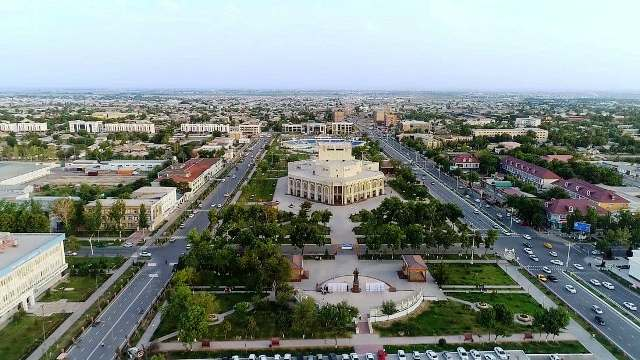
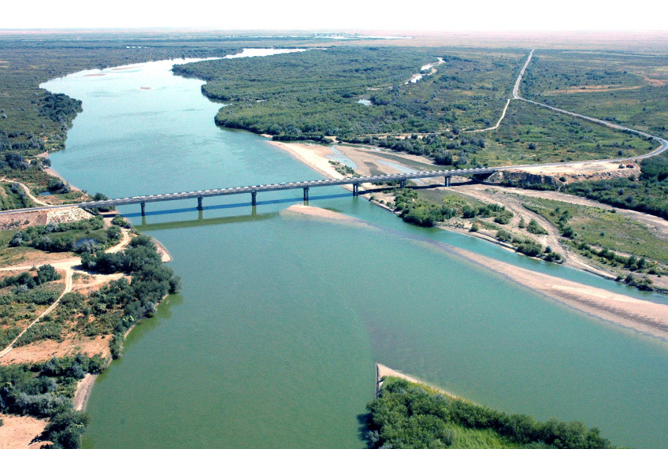
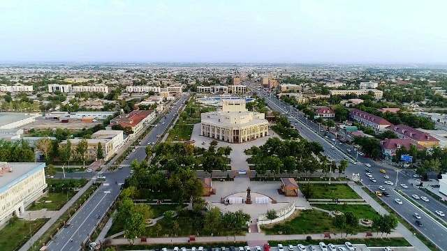
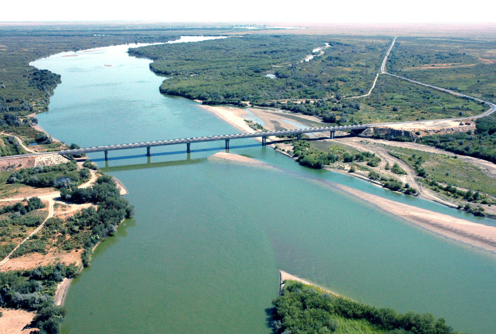
Surxondaryo viloyati — Oʻzbekiston Respublikasi tarkibidagi viloyat. 1941-yil 6-martda tashkil etilgan (1925-yil 29-iyundan Surxondaryo okrugi boʻlgan). 1960-yil 25-yanvarda Qashqadaryo viloyati bilan qoʻshilgan. 1964-yil fevralda qaytadan tashkil qilindi. Respublikaning janubi-sharqida, Surxon-Sherobod vodiysida joylashgan. Viloyat nomi vohadan oqib oʻtuvchi “Surxon” (fors-tojik: “qizil”) daryosi nomidan kelib chiqqan. Janubidan Amudaryo boʻylab Afgʻoniston, shimoliy, shimoli-sharq va sharqdan Tojikiston, janubi-gʻarbdan Turkmaniston, shimoli-gʻarbdan Qashqadaryo viloyati bilan chegaradosh. Maydoni 20,1 ming km². Aholisi 2821,9 ming kishi (2023-yil 1-aprel holatiga koʻra). Tarkibida 14 ta tuman (Angor, Bandixon, Boysun, Denov, Jarqoʻrgʻon, Muzrabot, Oltinsoy, Sariosiyo, Termiz, Uzun, Sherobod, Shoʻrchi, Qiziriq, Qumqoʻrgʻon), 8 ta shahar (Boysun, Denov, Jarqoʻrgʻon, Termiz, Shargʻun, Sherobod, Shoʻrchi, Qumqoʻrgʻon), 114 ta shaharcha, 865 ta qishloq aholi punktlari mavjud (2020). Markazi — Termiz shahri.
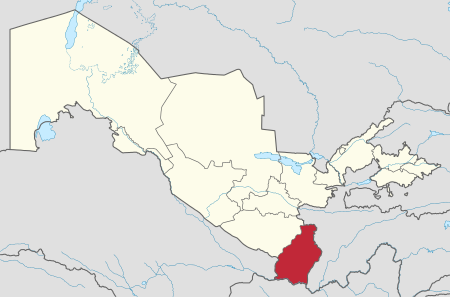 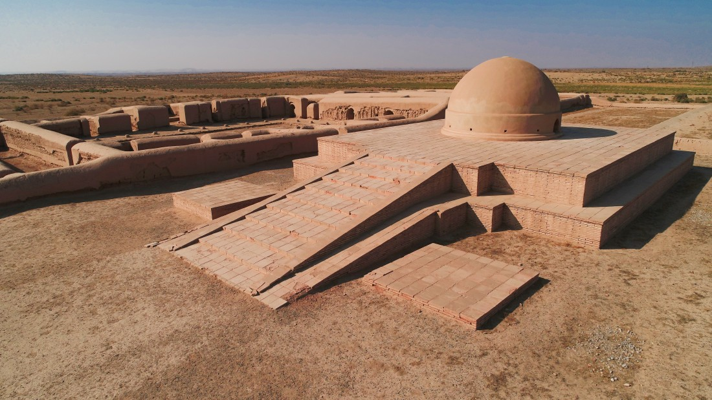
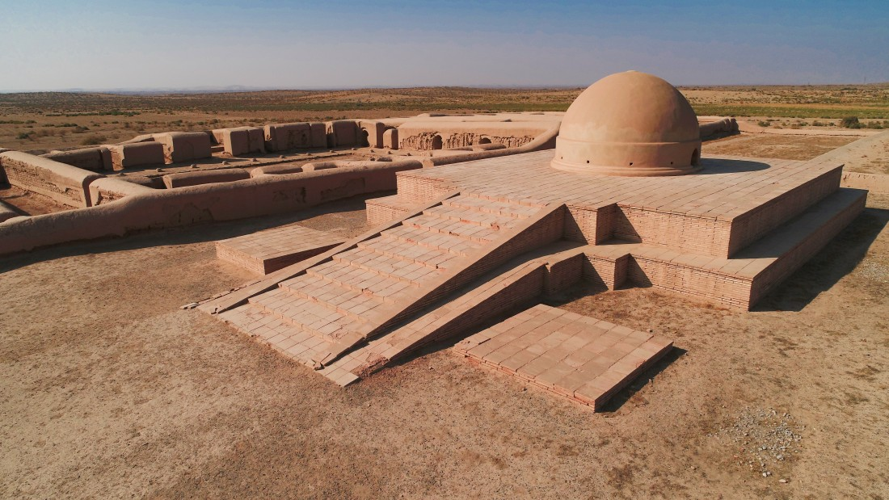
Toshkent — Oʻzbekistonning poytaxti va eng yirik shahri boʻlib, aholisi boʻyicha Markaziy Osiyodagi eng yirik qadimiy shaharlardan biri hisoblanadi. Oʻzbekistonning shimoli-sharqiy qismida, Qozogʻiston bilan chegaraga yaqin qismda joylashgan boʻlib, maydoni 334,8 km2 ni tashkil etadi. 2023-yilning 1-iyulidagi maʼlumotlarga koʻra, Toshkent aholisi 2 995 000 nafar kishini (Oʻzbekiston aholisining qariyb 8 foizi) tashkil etadi[2]. 2018-yilgi maʼlumotlarga koʻra, Toshkent shahrining YIMi $2,74 milliardni tashkil etadi va bu koʻrsatkich Oʻzbekistondagi eng katta YIMga ega shahar boʻlib kelmoqda[5][6]. Milodiy VIII asr oʻrtalarida islomiy taʼsir boshlangunga qadar, Toshkentga sugʻd va turkiy madaniyat taʼsir koʻrsatgan. 1219-yilda Chingizxon Toshkentni vayron qilganidan soʻng, shahar qayta tiklandi va Buyuk Ipak yoʻlidan foyda koʻrdi. XVI-XVII asrlarda Toshkent Shayboniylar va Ashtarxoniylar davlati tarkibida boʻlgan. XVIII–XIX asrlardan boshlab ushbu shahar Qoʻqon xonligi tomonidan zabt etilgunga qadar, mustaqil shahar-davlatga aylangan edi. 1865-yilda Toshkent Rossiya imperiyasi tarkibiga kirdi hamda Turkiston general-gubernatorligi markazi boʻldi. Sovet davrida bu shahar butun Sovet Ittifoqining majburiy deportatsiyasi tufayli katta oʻsish va demografik oʻzgarishlarga guvoh boʻlgan. 1966-yilda boʻlgan Toshkent zilzilasi tufayli Toshkentning katta qismi vayron boʻlgan edi, biroq u namunali Sovet shahri oʻlaroq qayta qurilgan. Oʻsha paytda Toshkent Sovet Ittifoqining Moskva, Leningrad va Kiyev shaharlaridan keyin turadigan toʻrtinchi yirik shahar boʻlgan[7]. Hozirgi kunda, mustaqil Oʻzbekiston poytaxti sifatida, Toshkentda koʻp millatli aholi saqlanib qolgan, ular orasida etnik oʻzbeklar va qozoqlar koʻpchilikni tashkil qiladi. 2009-yilda Toshkentning 2 200 yilligi nishonlandi. Bu munosabat bilan shahar infra va transport tizimi yangilandi[8][9]. Toshkent yirik shahar
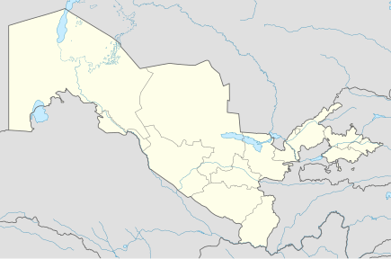 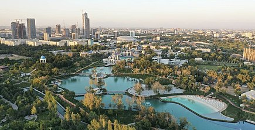Toshkent viloyati — Oʻzbekiston Respublikasi tarkibidagi viloyat. Respublikaning shimoli-sharqida. 1938-yil 15-yanvarda tashkil kilingan. Shimoliy va shimoli-gʻarbdan Qozogʻiston Respublikasi, shimoli-sharqdan Qirgʻiziston Respublikasi, sharqdan Namangan viloyati, janubidan Tojikiston Respublikasi, janubi-gʻarbdan Sirdaryo viloyati bilan chegaradosh. Maydoni (Toshkent shahri maydonisiz) 15,3 ming km². Aholisi (Toshkent shahri aholisisiz) 2.931 million kishidan ziyod (2022). Viloyat tarkibida 15 ta tuman (Bekobod, Boʻka, Boʻstonliq, Zangiota, Oqqoʻrgʻon, Ohangaron, Parkent, Piskent, Chinoz, Yuqori Chirchiq, Yangiyoʻl, Oʻrta Chirchiq, Qibray, Quyi Chirchiq), 17 shahar (Angren, Bekobod, Boʻka, Doʻstobod, Keles, Olmaliq, Oqqoʻrgʻon, Ohangaron, Parkent, Piskent, Toshkent, Toʻytepa, Chinoz, Chirchiq, Yangiyoʻl, Yangiobod, Gʻazalkent), 18 shaharcha (Alimkent, Boʻzsuv, Gulbahor, Zafar, Iskandar, Krasnogorsk, Nurobod, Olmazor, Salor, Tuyaboʻgʻiz, Chigʻiriq, Chorvoq, Eshonguzar, Yangibozor, Yangi chinoz, Yangihayot, Oʻrtaovul, Qibray), 146 qishloq fuqarolari yigʻini bor. Markazi — Nurafshon shahri.
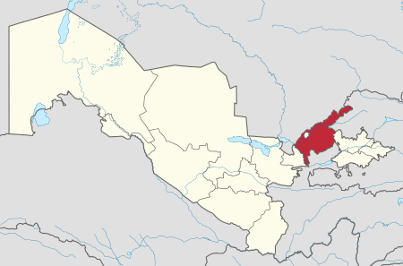 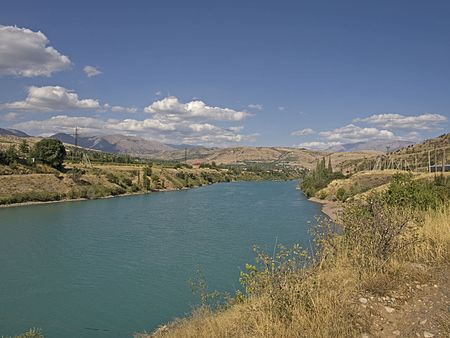 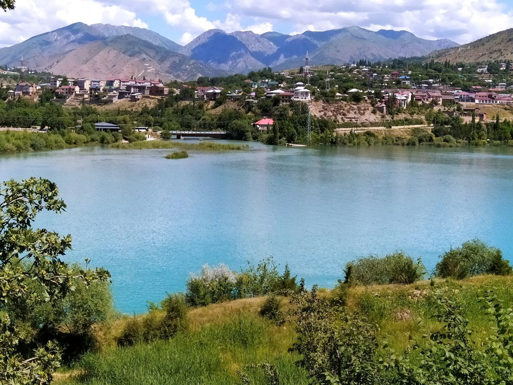Xorazm viloyati — Oʻzbekiston Respublikasi tarkibidagi viloyat. 1925-yil fevraldan 1938-yil yanvargacha Xorazm okrugi, 1938-yil 15-yanvarda viloyat maqomiga oʻtkazilgan. Viloyat shimoldan Qoraqalpogʻiston respublikasi, janubdan Turkmaniston respublikasining Toshhovuz viloyati, sharqdan Buxoro viloyati bilan chegaradosh. Shaharlari — Urganch , Xiva va Pitnak. Umumiy maydoni — 6,05 ming kvadrat kilometr. Maʼmuriy markazi — Urganch shahri. Etimologiyasi Xorazm soʻzi birinchi marta zardushtiylarning muqaddas kitobi „Avesto“da tilga olingan. Qadimgi xorazm tilidan tarjima qilingan Xorazm „pastlikdagi yer“, „oziq-ovqatli yer“ degan maʼnoni bildirgan degan fikrlar ham bor. Tarixi Miloddan avvalgi 8-asrda xorazmliklar tomonidan asos solingan Markaziy Osiyodagi eng qadimiy davlatlardan biri tashkil topdi. Bu yerda massagetlar, saklar, apasaklar, oslar, daxlar va boshqalar qabilalari ham yashagan. 12-asrda Oʻrta Osiyoda qudratli Xorazmshohlar davlati tashkil topdi. U oʻzining eng gullab-yashnagan choʻqqisiga 13-asr boshlarida Alauddin Muhammad II davrida erishgan. Ammo imperiyaning gullagan davri uzoq davom etmadi va u moʻgʻullar bosqinidan natijasida Xorazmshohlar davlati quladi. 1920-yil fevral oyida Xiva xonligining vorisi sifatida Xorazm Xalq Sovet Respublikasi tashkil topdi[1]. Hukmdor rasman taxtdan voz kechgach, 1920-yil 26-aprelda Birinchi Xorazm Qurultoyi (yigʻilishi) eʼlon qilindi[2]. 1923-yil 30-oktabrda XXSR Xorazm Sotsialistik Sovet Respublikasiga aylantirildi. Oʻrta Osiyoda milliy-hududiy chegaralanish munosabati bilan Xorazm SSR tugatilishini eʼlon qildi. Xorazm SSRning oʻzbeklar yashaydigan 23 ta tumani yangidan tashkil qilingan Oʻzbekiston SSR tarkibiga Xorazm viloyati qilib kiritildi[3]. U 1924-yilning kuzigacha, uning hududi Oʻzbekiston SSR (Xorazm viloyati tarkibida), Turkmaniston SSR va Qoraqalpogʻiston Muxtoriyati oʻrtasida boʻlingangacha mavjud edi. 1925—1930-yillarda va 1932—1938-yillarda Xorazm tumani tashkil etilgan. 1938-yil 15-yanvarda alohida viloyat sifatida tashkil topdi[4]. Xorazm algebra va algoritm asoschisi Muhammad bin Muso Al Xorazmiy va shar shaklidagi yer xaritasini yaratgan Abu Rayxon Beruniy hamda boshqa olim va arboblarning vatani hisoblanadi. 2003-yilda Xorazm viloyati Jaloliddin Manguberdi ordeni bilan taqdirlangan
 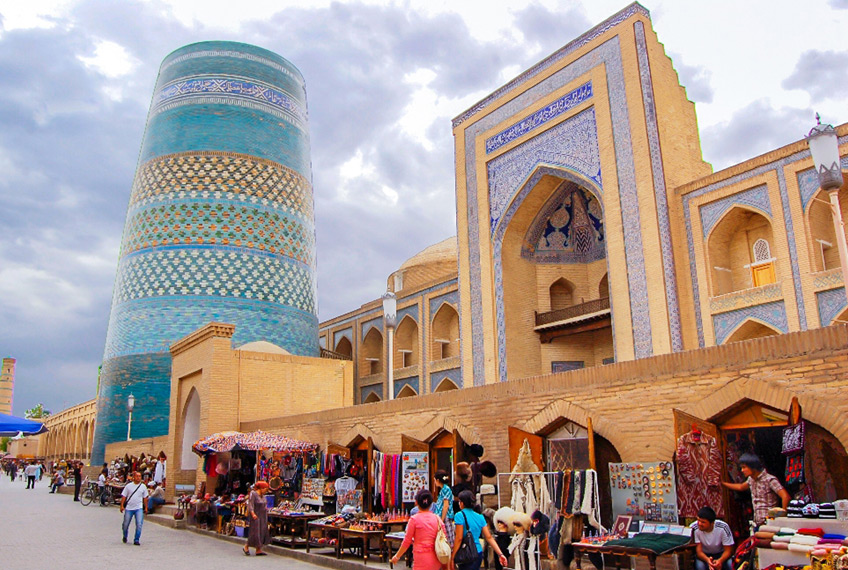
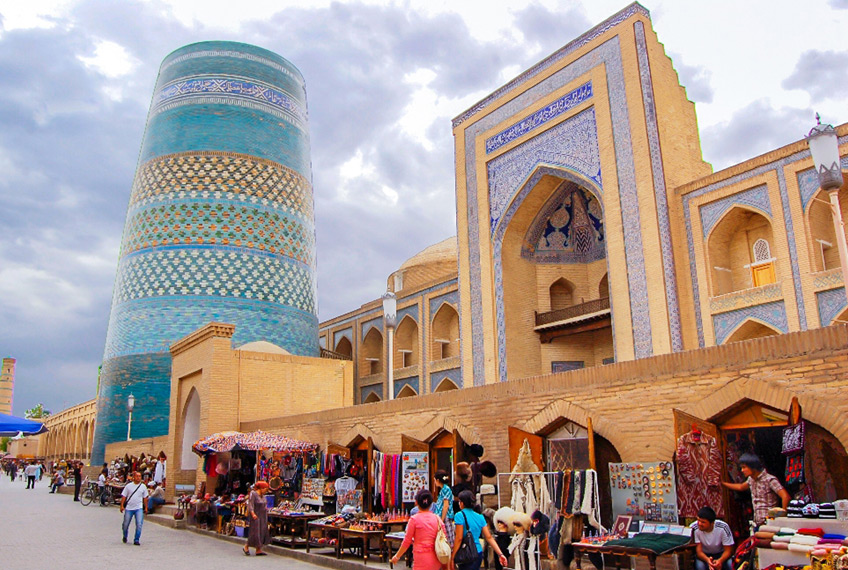